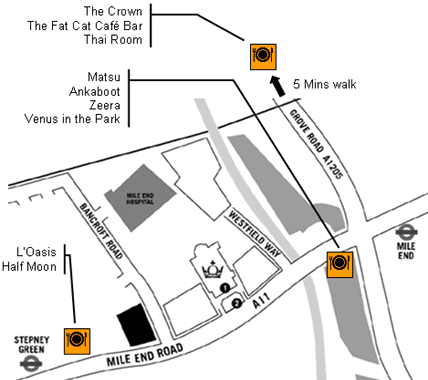

ISMIR 2005
6th International Conference
on Music Information Retrieval
London, UK 11 - 15 September 2005

Eating and Drinking
Suggestions for Restaurants and Pubs near Queen Mary, Mile End Campus (Conference Venue).

Restaurants
Stepney Green Tube Area, 213-237 Mile End Road, E1 4AA
[5 mins walk from Queen Mary]
Green Bridge Area, 552-558 Mile End Road, E3 4PL
[5 mins walk from Queen Mary]
- Venus in the Park (Greek), 552 Mile End Road [Review] [2]
- Zeera (Indian), 554 Mile End Road [Review]
- Ankaboot (Mediterranean), 556 Mile End Road [Review]
- Matsu (Japanese), 558 Mile End Road [Review] [2]
Bow Wharf Area, 221-223 Grove Road, E3 5SN
[15 mins walk from Queen Mary]
- Thai Room (Thai), G2-G7 Bow Wharf, 221 Grove Road [Review] [2]
- The Crown (Gastropub), 223 Grove Road [Review] [2]
- The Fat Cat Café Bar, Bow Wharf, Grove Road
Others
- Morgan Arms (Gastropub), Morgan Street, E3 5AA [Review]
See also:
- Bars and Restaurants in Bricklane (from viewlondon.co.uk)
- Visit Bricklane
- Indian Restaurants in East London
- Italian Restaurants in East London
- Oriental Restaurants in East London
- Other cuisines in East London
- Search for a restaurant at LondonEats.com
- ViewLondon: Restaurants in Stepney
- Waterscape: Mile End and Bow Wharf
- Knowhere: Eating and drinking in Bow
Pubs & Bars
- The Half Moon, Mile End Road, E1
- Morgan Arms, Morgan Street, E3
- L'Oasis [Review] [2]
See also:
- Fancyapint? (Look near Stepney, Mile End or Bow Road)
- Bars and Pubs in Tower Hamlets
- Pubs in the East End (from Britannia.com)
- ViewLondon: Pubs & Bars
|
|
|